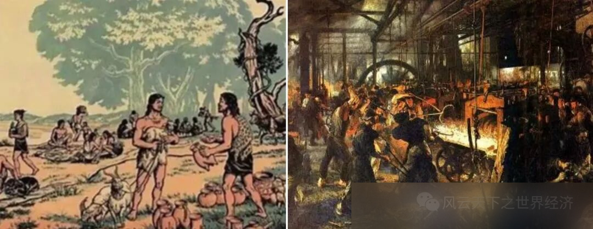
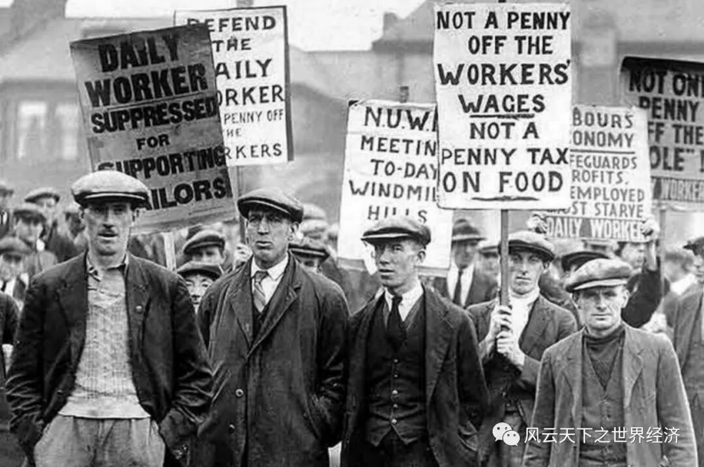
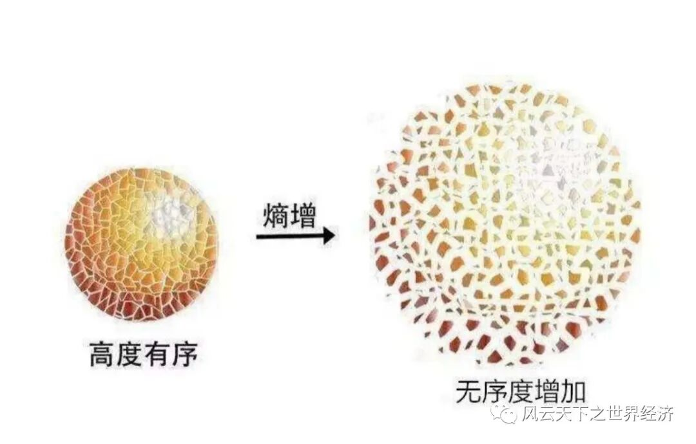

写下这些文字的是我《世界经济史》课堂上聪慧的同学们 ，
而这个系列早在2014年首次开课时就已预约。
八年后当她以如此风姿脱岫而出时，
我体会到了信念被兑付后的小欣喜。
深沉的经济史与年轻的思考在这里相遇，
激荡出灵动的弦歌，
以及渐次苏醒的思想。
为这个“小风云”系列，
我特意选了“总有人正年轻”这样一个名字。
其含义正如你所料，
这门课虽然以史为名，
但是我们真正寄予其中的是未来。
一万两千年世界经济史风云浩荡，
恰似过去留给我们的一个巨大谜面。
关于人类财富增长秘密的蛛丝马迹隐没其中，
等待年轻的他们去破解。
——鲁晓东
让我们设想一个平行世界，在那里，出于某些自然的原因（或许平行世界的地球并无适宜大规模农业的地理、气候和温度条件），农业革命并没有发生和广泛传播，那么人类将会何去何从？
我们不得不承认的是，生活在狩猎采集状态中的人类个体，不论是在智力上抑或是体力上，都要优于农业状态的人类。狩猎者需要灵敏的步伐，强大的爆发力以及坚韧的耐力以应对狩猎工作；另外，由于从事非标准化的劳动，狩猎者每天需要开动脑筋去灵活应对各种不确定性，掌握多种技能；同时，狩猎者在食物来源的构成上也更加丰富，水果，肉类和蔬菜的组合为他们提供了丰富的维生素、蛋白质以及脂肪；最后，这些狩猎者将免受瘟疫和传染病的侵袭，因为他们掌握了炙烤食物来消除病菌的方法，而又很少大规模聚集，这就使得瘟疫难以产生并大范围传播。因此，在农业革命并未发生的平行世界中，大地上出现的或许多为身材高大，肌肉壮硕，皮肤黝黑的狩猎者，他们身披兽皮，手握刀斧。他们往往三五成群，多者不过数十人一组，这是他们狩猎编队的最优人数。他们也拥有大量的闲暇时间，在这些空闲中，凭借着对动植物，对自然界的观察，他们在墙壁和地面上创作出了丰富又充满想象力的美术作品。

非洲地区的狩猎采集者
如果没有农业革命，那么不同的族群之间难以爆发战争，因为狩猎采集者处在不断流动的状态中，他们随身携带的物质财富很少，对其他部落而言缺乏掠夺的诱惑；他们又广泛拥有武器、善于追踪和判断地形，这也意味着难以对他们发起必胜的袭击。不同族群之间不仅难以相互攻伐，也难以合作，因为他们的物质资料大体相似，难以互补；捕猎和采集又不需要大规模的军队，人数过多会形成负担。因此，不同部落更多处于互不侵扰，相安无事的状态，这样一来，狩猎采集者难以形成超大规模的族群，也就难以实现大规模的集体学习，其所产生的知识量无法满足留存和迭代的需要，系统化的文字体系也难以诞生，也就难以催生国家、律法等政治要素。在狩猎采集社会中，人口总数、生产总值并没有显著的变化，人类的历史基本处在轮回式的运行阶段，人类的组织形态呈现出分散，混沌而又和平的特征。
如果没有农业革命，决定农业社会运作秩序的阶级制度则无从产生。狩猎采集社会也有等级秩序，但这种等级主要是以声望为基础的经验等级，而非以以私有财产为基础的财富等级。经验是个人累积的，往往由氏族中德高望重者掌握，而私有财产是可继承的，它会在代际间滚雪球式的增大，从而不断固化阶级，加深人与人之间不平等的程度。在狩猎采集社会中，分享是必然的，因为打猎和集采是不确定性强的活动，而分享是确定的，人人都有运气不好的一天，都有需要接济的时候，这样一来，拒绝分享的成本就显得很高。分享构成了氏族中人与人之间的依赖关系，这种相互依赖使得每个人都有发言和表决权，不平等的现象被极大削弱了。
一个令我十分好奇的问题是，如果没有农业革命，人类能否实现类似于科技革命的爆炸式发展，抑或是通过其他发展渠道摆脱生产力的轮回？答案或许是否定的，究其原因，或许就需要先阐释农业革命-科技革命的跃升逻辑。我与戴蒙德的看法比较一致：我认为科技革命承农业革命的制度要求，其动因是利用自利的人性，督促人类打破现状，扩大积累，提升力量。而农业革命又承自气候变化：地球上所有的生命都是碳基生物体，碳基生命的生存必须依赖于与自然界的碳循环，也就是以呼吸、进食为主要手段的化学反应，因此人类必须依赖自然界的物质条件谋生存和发展。气候变暖使得新月地区和大河流域孕育了肥沃的土壤和年生草本植物，这使得农耕能够养活更多的人口，农业的生产方式变得更加可持续。在我们假设的平行世界中，由于缺乏自然条件，狩猎采集社会缺乏发展农业的动因，因此难以孕育出科技革命。人类又能否不通过农业革命而是从其他渠道实现发展？我认为这同样取决于自然条件的变化：如果气候过度变暖，地球汪洋一片，或许人类会进化出鳃并转入水下生活，海洋用xyz轴衡量的三维空间远比陆地广阔得多，水中生存的人类或许会发展出远超我们想象的科技和成就；如果气候在短期变化无常，或许人类会像三体人一样获得脱水的技能；又或许平行世界的“人类”是硅基生命或意识形态生命体，其生存和发展并不需要依赖自然环境。宇宙的生命形态无穷无尽，又或许人类是漫漫星海中生命的孤岛。这个世界过于神秘，我难以参透。但我认为，在已知的自然条件和生命形式下，人类提高生产力的途径就只有走农业革命-科技革命的道路。

农业革命与工业革命
对我来说，另外一个重要的问题是：如果没有农业革命，人类会更好吗？事实上，这个问题或许本身就是伪命题，“好”的标准是什么？生产力？幸福感？基因的复制数量？如果从生产力的角度衡量，答案毋庸置疑：人类不仅更好了，而且在短时间内变好了数百倍，因为人类的物质生产力相比狩猎采集时代提升了不止数百倍，人类的平均能源消耗量也远非狩猎采集时代的人类所能及；如果用幸福感衡量（事实上幸福感本身就是模糊的概念，我们该如何衡量幸福感？或许可以将人的一生分为相等的时间段，加总不同时间段内大脑皮层分泌多巴胺的总和），似乎就难以妄下定论。《人类简史》从另外一种角度考虑农业革命的带给人类的影响，认为小麦、家禽、特权阶级操控了普罗大众。确实，大部分下层阶级在农业革命后变得更加辛劳和困苦，世界由于开放而逐渐形成贫富人群的落差，而对比足以使得一部分人陷入绝望的处境，大规模的战争和瘟疫肆虐，污染和环境问题日益突出……如果没有农业革命，人类或许会因闲适而满足，因无知而无虑，因简单而幸福。如此看来，幸福感并不因农业革命而增长而显著提高。从DNA的复制量来衡量，毫无疑问人类的总数以几何式的增长了，可与此同时家禽的数量也以更夸张的倍数增加了，我们可以说它们比以往更好了吗？当我们比较北欧与印度的时候，我们能说印度更胜一筹吗？另外，农业革命广泛传播了人类的基因，那我们是否可以说科技革命使得电脑芯片和零件的数量大幅增长，那么或许机器才是演化最成功的生命？毕竟我们不清楚机器是否会在未来被赋予生命，产生自我意识。或许一个比较好的衡量方法，是把所有存在可收集数据的变量集合在一起，加权成为一个“文明优劣指标”，来判断狩猎采集文明与农业文明的优劣。

1926年英国工人罢工，数百万工人走上街头进行抗议
然而，我想从另一种角度谈谈农业社会与狩猎采集社会之区分：从集体-个人的角度。目前我们已知的所有物质都是由微观层面的分子组成，但单个分子并不能够反映物质的特性。同样的，量子力学、牛顿力学、相对论分别反映了物体在微观、中观、宏观方面的性质。这也就是说，一件事物在不同层面上的特性是层层展开的，集体和个体的人类所展现出的特征往往不尽相同。在我看来，狩猎采集社会的人类处在一种混沌而又平和的状态，尽管他们也有部落和权力系统，也有文艺和智慧创造，但个体的人类与集体的人类所展现出的特质并没有很大的差异。而农业革命为人类带来的并非智慧或是幸福，而是结构。自农业革命以后，人类构建了秩序、货币、文字与国家系统，个体的人类和集体的人类区分开来。个体的人或许是短暂的，脆弱的，不堪一击的，但是没有人会轻视集体的力量、思想和智慧。结构化的集体可以使1.49亿平方公里的陆地焕然一新，可以创造悠久的历史和文化，可上九天揽月，可下五洋捉鳖，这些成就在任何一个个体看来都是天方夜谭，然而一个组织良好，结构明确的集体却可以做到。
热力学第二定律认为：在孤立系统内，任何变化不可能导致熵的减少。事实上，随着时间的推移，地球的内核会慢慢冷却，地球自转的速度也在逐渐降低，恒星会随着时间的推移变得越来越亮，最终恒星核心的燃料会被消耗一空，核聚变反应停止，从而黯淡无光。如果宇宙的结局注定是混沌无序，那么在这个过程中，农业革命却短暂的使人类从这种绝望中抽离出来，构建出秩序和结构（如果把人类社会看做一个孤立的系统）。

熵增定律
如果毁灭是不可避免的结局，那么农业革命就宣告了人类在这条道路上无声的反抗与进击，即使无法改变毁灭这个事实，它也展现出了人类作为宇宙万物一份子所具有的尊严与意志。